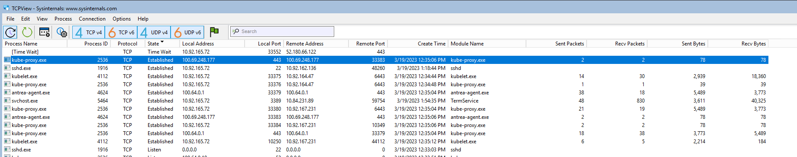
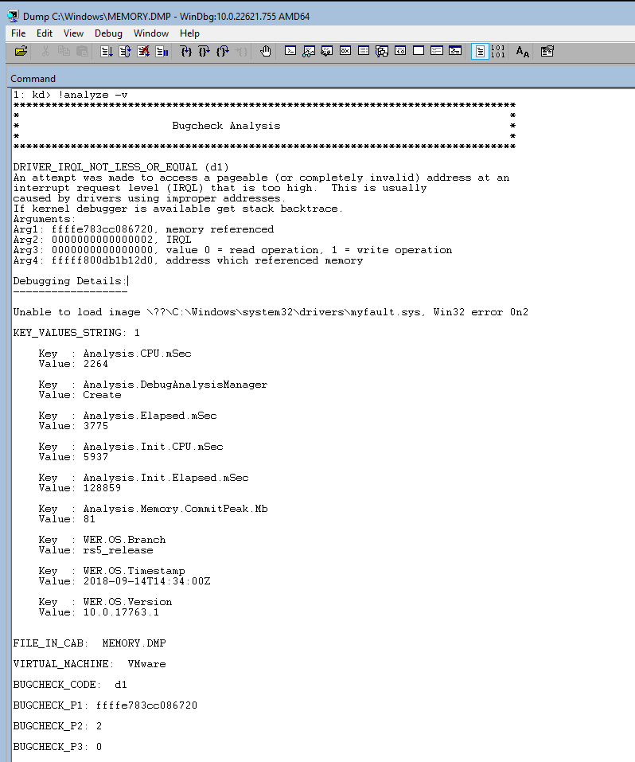

Windows notebook
Notes from Windows Internal 7th Edition and general debugging rules
Windows Introduction
Introductory chapter about MS Windows OS concepts and terms used in the book. Intro of the Windows sysinternals. Summary of Windows Driver Kit (WDK), Windows Software Development Kit (SDK).
Versions
Accordingly the MS site the following versions are available as server Windows options.
| Windows Server Release | Servicing options | Availability |
|---|---|---|
| Windows Server 2022 | LTSC | 2021-08-18 |
| Windows Server 2019 | LTSC | 2018-11-13 |
| Windows Server 2016 | LTSC | 2016-10-15 |
Windows API
Ms core set of application programming interfaces available in MS OSs. Several implementations that are often referred to by their own names (win32 api) Almost all Windows programs interact with the Windows API. Developer support is implemented in a form a software development kit, or MS SDK. WinAPI mostly focus on C. kernel32.dll is a core DLL exposing to applications most of the Win32 base API, such as memory mngmt, input/output, process and thread creation, (linux equivalent = libc).
winRT or Windows Runtime is built on top of COM, adding various extensions to the base infrastructure .NET fw is part of Windows, uses the CLR (common lang runtime) and FCL for user development support. A few contexts for libraries and services:
- Windows API functions
- Native System Services (system calls)
- Kernel support functions (or routines)
- Windows Services
- Dynamic Link Libraries
Processes
Program vs. Process with the following differences: Process has a private vritual adress space, an executable program, a list of open handlers, a security context, a processs ID and at least one thread.
Jobs- Windows provides an extension of the process model called jobs, a job object main functions is to allow the management and manipulations of a group of processes as a unit.
Virtual Memory
Implements a virtual mem system based on flat address space, provides each process with illusion of having its large address space. Translates and maps the virtual address into physical addr where the data is actually stored. paging data to disk frees physical memory so that it can be used for other processes or for the OS itself. When a thread accesses a vritual address that has been paged to disk, VMem manager loads the info back into memory from disk.
Address Windowing Extensions (AWE) allows 32-bit apps allocate up to 64Gb of physical memory. 64-bit windows provides 128 TB.
Kernel mode vs. user mode
running processes in different modes (ring levels), providing the Os kernel with higher privileges level than user model apps have, the processor provides a necessary foundation for OS designers to ensure misbehaving apps don't disrupt the system. User apps switch from user to kernel mode when they make a system service call.

Windows provides DAC, Privileged access control and mandatory integrity control
Kernel debugging
Examining internal kernel data structures and steping through functions in the kernel Useful way to investigate Windows int. Debugging tools:
- cdb
- kd
- WinDBc
- User-mode debuggers
- Kernel-mode debuggers
Install the SDK with the following command
Invoke-WebRequest -URI "https://go.microsoft.com/fwlink/p/?linkid=2196241" -Out sdk.exe
sdk.exe
To force a crash you can run notMyfault.exe /crash
If KD or WinDbg is performing kernel-mode debugging, it can force a system crash to occur. This is done by entering the .crash (Force System Crash) command at the command prompt. (If the target computer does not crash immediately, follow this with the g (Go) command.)

🦀 Rust annotations
This document is following the days and research mainly from the Comprehensive Rust book. The tutorial consist of 4 days passing in different topics of the language
Support related material
Day 1 - 1/2/2023
Modern systems programming language focusing on safety, speed and concurrency. Accomplishes these goals by being memory safe without using garbage collection.
Rust editions
Backport using cargo --edition, cargo fix can help on code base migration
- Rust 2015 (May) - stability without stagnation
- Do not have async or await keywords
- Rust 2018
- Rust 2021 (latest) - 1.56.0 - RFC #3085
Current version used:
$ cargo version
cargo 1.66.0 (d65d197ad 2022-11-15)
Tools and binaries
Install Rust on ~/.cargo with the following command
curl --proto '=https' --tlsv1.2 -sSf https://sh.rustup.rs | sh
Shell configuration is already made, toolchain management is made via rustup (i.e. gimme or pyenv)
cargo (pkg manager) is the tool responsible to manage projects, install dependencies, run tests, etc.
cargo --help
Some common cargo commands are (see all commands with --list):
build, b Compile the current package
check, c Analyze the current package and report errors, but don't build object files
clean Remove the target directory
doc, d Build this package's and its dependencies' documentation
new Create a new cargo package
init Create a new cargo package in an existing directory
add Add dependencies to a manifest file
remove Remove dependencies from a manifest file
run, r Run a binary or example of the local package
test, t Run the tests
bench Run the benchmarks
update Update dependencies listed in Cargo.lock
search Search registry for crates
publish Package and upload this package to the registry
install Install a Rust binary. Default location is $HOME/.cargo/bin
uninstall Uninstall a Rust binary
Other binaries includes:
- rustc - rust compiler
- mdbook - create markdown books like this one
- rustfmt - linter and formatter
- rustup - toolchain installer
Day 1: Basic Rust, ownership and the borrow checker.
Basic Rust
-
rustc uses LLVM
-
Multiple architectures (WASM included)
cargo build --target wasm32-unknown-unknown
-
Basic rust syntax:
- Variables,
- Scalar and compound types,
- Enums,
- Structs References,
- Functions and Methods
-
Memory management:
- stack vs heap,
- manual memory management,
- scope based memory management and gc
-
Ownership:
- move semantics,
- copying and cloning,
- borrowing and lifetimes
Syntax sugar
- Blocks are delimited by curly braces
mainis the entry point- Provides hygienic macros and utf-8 encoded and contain unicode
Types
Scalar types
| Types | Literals | |
|---|---|---|
| Signed integers | i8, i16, i32, i64, i128, isize | -10, 0, 1_000, 123i64 |
| Unsigned integers | u8, u16, u32, u64, u128, usize | 0, 123, 10u16 |
| Floating point numbers | f32, f64 | 3.14, -10.0e20, 2f32 |
| Strings | &str | "foo", r#"\\"# |
| Unicode scalar values | char | 'a', 'α', '∞' |
| Byte strings | &[u8] | b"abc", br#" " "# |
| Booleans | bool | true, false |
Compound Types
| Types | Literals | |
|---|---|---|
| Arrays | [T; N] | [20, 30, 40], [0; 3] |
| Tuples | (T1, T2, T3, ...) | ('x', 1.2, 0) |
Other data structures exists:
Variables
mut is used when a variable is initialized and needs to be changed later.
! marks this as a macro invocation, not a function call.
let statements declare local variables
fn function1() -> i32 { let _logical: bool = true; let _a_float: f64 = 1.0; let _an_integer = 5i32; let _default_int = 2; // i32 let mut mutablevar = 12; mutablevar = 35; return mutablevar; } fn main() { let out = function1(); println!("{}", out); }
Pointers
Similar to golang and pointers are treated with references and &
use rand::Rng; use std::cmp::Ordering; fn main() { let guess :i32 = 10; let secret_number :&i32 = &rand::thread_rng().gen_range(1..=10); match guess.cmp(secret_number) { Ordering::Less => println!("Too small!"), Ordering::Greater => println!("Too big!"), Ordering::Equal => println!("You win!"), } println!("{}", *secret_number) }
The main aim of lifetimes is to prevent dangling references, which cause a program to reference data other than the data it’s intended to reference.
fn main() { let ref_x: &i32; { let x: i32 = 10; ref_x = &x; } println!("ref_x: {ref_x}"); }
Won't compile because the value ref_x is referring to has gone out of scope before we try to use it.
Slices
fn main() { let s = String::from("hello world"); let hello = &s[0..5]; let world = &s[6..s.len()]; println!("slices: {}, {}", hello, world) }
Functions and methods
- Functions are introduced with
fn(pronounced "fun") - Methods comes from
structs
struct Square { width: i32 } impl Square { fn area(&self) -> i32 { return i32::pow(self.width, 2) } } fn main() { let sq :Square = Square{width: 10}; let area :i32 = sq.area(); println!("{area}"); }
Exercises
A few implicit conversions:
#![allow(unused)] fn main() { println!("{x} * {y} = {} -- {} {}", multiply(i16::from(x), y), y.to_string(), f64::from(y)); }
Array loops, matrices transposition.
fn transpose(mut matrix: [[i32; 3]; 3]) -> [[i32; 3]; 3] { // returning cloned transpose for now. requires research on borrowing concept. let mut new_matrix:[[i32; 3]; 3] = matrix.clone(); for (i, r) in matrix.iter().enumerate() { for (j, _c) in r.iter().enumerate() { new_matrix[i][j] = matrix[j][i]; } } return new_matrix } fn pretty_print(matrix: &[[i32; 3]; 3]) { println!("{:?}", matrix); } fn main() { let matrix = [ [101, 102, 103], // <-- the comment makes rustfmt add a newline [201, 202, 203], [301, 302, 303], ]; println!("matrix:"); pretty_print(&matrix); let transposed = transpose(matrix); println!("transposed:"); pretty_print(&transposed); }
Variables
By default, variables are immutable, need to use mut. Static typing
allow type inference, do not pass the type :<type>, and let rust infer it.
const use the compile-time constants.
Shadowing
Declare a variable with the same name as a previous variable. The first variable is shadowed by the second on this case.
fn main() { let x = 5; let x = x + 1; { let x = 100; println!("inner scope: {x}"); let x = true; println!("shadowed in inner scope: {x}"); } println!("outer scope {x}"); }
Memory management
Rust offers full control AND safety via compile time enforcement of correct memory management. Explicit Ownership concept.
Refer to mem management section from the tutorial.
Ownership
Binding have a scope where they are valid. A set of rules that govern how a Rust program manages memory. All programs have to manage the way they use memory while running. Memory is managed through a system of ownership with a set of rules that the compiler checks.
- Each value has an owner
- There can only be one owner at a time.
- When the owner goes out of scope, the value is dropped.
Move
fn main() { let s1 = String::from("hello"); let s2: String = s1; }
Data is moved from one s1 and s1 is not accessible anymore - This is a problem: when s2 and s1 go out of scope, they will both try to free the same memory. This is known as a double free error and is one of the memory safety bugs we mentioned previously. Freeing memory twice can lead to memory corruption, which can potentially lead to security vulnerabilities. Rust doesn’t need to free anything when s1 goes out of scope. when accessing it raises an error:
value is borrowed here after move.
Transfer ownership happens on function parameters as well.
Another way to interect is via s1.close().
Struct must use #[derive(Copy, Clone, Debug)] annotation.
For functions is not allowed to use s after the function ownership taken
fn takes_ownership(s :String) { println!("on function: {}", s) } fn main() { let s = String::from("hello"); // s comes into scope takes_ownership(s); // s's value moves into the function... println!("outside function: {}", s) }
Borrowing and lifetimes
Passing references (&) makes the data still being owner by some other variable.
function(&s1), allows to refer the value of s1 but do not own it.
The caller retains ownership of the inputs.
fn main() { let p1 = String::from("hello"); let f1; { let p2 :String = String::from("hello 2"); f1 = function(&p1.as_str(), &p2.as_str()); } println!("{f1} {p1}"); } // returns with p2 lifetime if p2 has 'a. // forcing the lifetime for the p1 variable allows the // return. fn function<'a>(p1 :&'a str, p2 :&str) -> &'a str{ ;; println!("function {p1} {p2}"); return p1 }
These borrowed values has a lifetime - ensure that references are valid as long as we need them to be.
&'a String means “a borrowed String which is valid for at least the lifetime a`
Reference:
https://doc.rust-lang.org/book/ch10-03-lifetime-syntax.html?highlight=lifetime#lifetime-elision
Exercises
- Designing a library
impl Library { fn new(books :Vec<Book>) -> Library { Library{ books } } fn len(&self) -> usize { self.books.len() } fn is_empty(&self) -> bool { self.books.is_empty() } fn add_book(&mut self, book: Book) { self.books.push(book) } fn print_books(&self) { for b in self.books.iter() { println!("{}", b) } } fn oldest_book(&mut self) -> Option<&Book> { self.books.sort_by(|a, b| a.year.cmp(&b.year)); self.books.first() } } fn main() { // This shows the desired behavior. Uncomment the code below and // implement the missing methods. You will need to update the // method signatures, including the "self" parameter! let books :Vec<Book> = vec!(); let mut library = Library::new(books); println!("Our library is empty: {}", library.is_empty()); library.add_book(Book::new("Lord of the Rings", 1954)); library.add_book(Book::new("Alice's Adventures in Wonderland", 1865)); library.print_books(); match library.oldest_book() { Some(book) => println!("My oldest book is {book}"), None => println!("My library is empty!"), } println!("Our library has {} books", library.len()); }
Day 2 - 1/3/2023
Structs are cool, methods can access the struct pointer Possible to use a tuple struct - normally used for single field wrappers
#![allow(unused)] fn main() { enum TShirt { L, M, P, } struct Newtons(f64); struct Member { name :String, force :Newtons, tshirt :TShirt, } impl Member { fn set_force(&mut self, force :Newtons) { self.force = force } } }
Usage of method receivers:
- &self : borrows the object from the caller using a shared and immutable reference.
- &mut self: borrows the object from the caller using a unique and mutable reference.
- self: takes ownership of the object and moves it away from the caller.
- none: status method on the struct.
after taking ownership with self, the variable is moved and cannot be borrowed back.
Pattern matching
This is an important feature of switch case that can be extended to more complex pattterns latter,
enum Result { Ok(i32), Error(String), } fn main() { let has_result = Result::Error("msg".to_string()); match has_result { Result::Ok(n) => println!("received {n}"), _ => println!("default"), } }
Deconstructuring enums/struct and Arrays -
enum Temperature { Celsius(i32), } struct SomeStruct { a: u32, b: u32, } fn main() { let ss = SomeStruct{a: 2000, b: 0 }; match ss { SomeStruct { a: 1, b } => println!(" a = {b} "), SomeStruct { .. } => println!(" default a "), } // match guards let temp = Temperature::Celsius(36); match temp { Temperature::Celsius(t) if t > 40 => println!("Is high {t}"), Temperature::Celsius(t) => println!("Is high {t}"), } }
Control flows
The old boring if, if let, while, while let, for, loop (endless), match, breaks
and continue. Blocks are allowed with {} and keep the scope.
Standard library
the standard library has a set of common types that are important
- Option and Result: used for optional values and error handling.
- Box: an owned pointer for heap-allocated data.
- Rc: a shared reference-counted pointer for heap-allocated data.
Use Rc when need to refer to the same data from multiple places.
fn main() { let s = [false, true, false, true, false, true]; let value = s.binary_search_by(|p| p.cmp(&false)); assert_eq!(value, Ok(0)); let five = Box::new(100); println!("{}", *five); let a = Rc::new(1); let b = a.clone(); println!("a: {a}"); println!("b: {b}"); }
Modules
Starts with mod, pub fn allows public access.
Access with <mod>::function. Folders have a mod.rs to declare the module.
Exercises day 2 - Part I
- Simple struct which tracks health statistics.
struct User { name: String, age: u32, weight: f32, } impl User { pub fn new(name: String, age: u32, weight: f32) -> Self { return User{name, age, weight} } pub fn name(&self) -> &str { &self.name } pub fn age(&self) -> u32 { self.age } pub fn weight(&self) -> f32 { self.weight } pub fn set_age(&mut self, new_age: u32) { self.age = new_age } pub fn set_weight(&mut self, new_weight: f32) { self.weight = new_weight } } fn main() { let bob = User::new(String::from("Bob"), 32, 155.2); println!("I'm {} and my age is {}", bob.name(), bob.age()); } #[test] fn test_weight() { let bob = User::new(String::from("Bob"), 32, 155.2); assert_eq!(bob.weight(), 155.2); } #[test] fn test_set_age() { let mut bob = User::new(String::from("Bob"), 33, 155.2); assert_eq!(bob.age(), 32); bob.set_age(33); assert_eq!(bob.age(), 33); }
- Multiple structs and enums for a drawing library.
#![allow(unused)] fn main() { use std::ops::Add; #[derive(Debug, Copy, Clone, PartialEq)] pub struct Point { x :i32, y :i32, } impl Add for Point { type Output = Self; fn add(self, other: Self) -> Self { Self { x: self.x + other.x, y: self.y + other.y, } } } impl Point { fn new(x :i32, y :i32) -> Point { Point{x, y} } fn magnitude(&self) -> f64 { f64::sqrt( (i32::pow(self.x, 2) + i32::pow(self.y, 2)).into()) } fn dist(&self, p1 :Point) -> f64{ f64::sqrt( (i32::pow(p1.x - self.x, 2) + i32::pow(p1.y - self.y, 2)).into()) } } pub struct Polygon { points :Vec<Point> } impl Polygon { fn new() -> Polygon { Polygon{ points: vec![]} } fn add_point(&mut self, p :Point) { self.points.push(p) } fn left_most_point(&self) -> Option<&Point> { self.points.first() } } #[cfg(test)] mod tests { use super::*; fn round_two_digits(x: f64) -> f64 { (x * 100.0).round() / 100.0 } #[test] fn test_point_magnitude() { let p1 = Point::new(12, 13); assert_eq!(round_two_digits(p1.magnitude()), 17.69); } #[test] fn test_point_dist() { let p1 = Point::new(10, 10); let p2 = Point::new(14, 13); assert_eq!(round_two_digits(p1.dist(p2)), 5.00); } #[test] fn test_point_add() { let p1 = Point::new(16, 16); let p2 = p1 + Point::new(-4, 3); assert_eq!(p2, Point::new(12, 19)); } #[test] fn test_polygon_left_most_point() { let p1 = Point::new(12, 13); let p2 = Point::new(16, 16); let mut poly = Polygon::new(); poly.add_point(p1); poly.add_point(p2); assert_eq!(poly.left_most_point(), Some(&p1)); } #[test] fn test_polygon_iter() { let p1 = Point::new(12, 13); let p2 = Point::new(16, 16); let mut poly = Polygon::new(); poly.add_point(p1); poly.add_point(p2); let points = poly.points.iter().cloned().collect::<Vec<_>>(); assert_eq!(points, vec![Point::new(12, 13), Point::new(16, 16)]); } } }
Exercises Day 2 - Part II
- luhn algorithm
pub fn luhn(cc_n: &str) -> bool { let mut sum = 0; let cc_number :String = cc_n.chars().filter(|c| !c.is_whitespace()).collect(); let length = cc_number.len(); let parity = length % 2; for (j, x) in cc_number.chars().enumerate() { let cc = cc_number.chars().nth(j).unwrap().to_digit(10); match cc { None => {} Some(mut n) => { if j % 2 == 0 { n *= 2; if n > 9 { n -= 9; } } sum += n; } } } if sum == 0 { false } else { println!("{} {}", sum % 10, sum); sum % 10 == 0 } } #[test] fn test_non_digit_cc_number() { assert!(!luhn("foo")); } #[test] fn test_empty_cc_number() { assert!(!luhn("")); assert!(!luhn(" ")); assert!(!luhn(" ")); assert!(!luhn(" ")); } #[test] fn test_single_digit_cc_number() { assert!(!luhn("0")); } #[test] fn test_two_digit_cc_number() { assert!(luhn(" 0 0 ")); } #[test] fn test_valid_cc_number() { assert!(luhn("4263 9826 4026 9299")); assert!(luhn("4539 3195 0343 6467")); assert!(luhn("7992 7398 7121 1114")); } #[test] fn test_invalid_cc_number() { assert!(!luhn("4223 9826 4026 9299")); assert!(!luhn("4539 3195 0343 6476")); assert!(!luhn("8273 1232 7352 0569")); } #[allow(dead_code)] fn main() {}
- Prefix matching
fn is_prefix_of(haystack :&str, p :&str) -> bool { haystack.as_bytes().starts_with(p.as_bytes()) } pub fn prefix_matches(prefix: &str, request_path: &str) -> bool { for (i, ph) in prefix.split("/").enumerate() { let p = request_path.split("/").nth(i); match p { Some(c) if ph== "*" => {}, Some(c) if c != ph => return false, None => return false, _ => {} } } true } #[test] fn test_matches_without_wildcard() { assert!(prefix_matches("/v1/publishers", "/v1/publishers")); assert!(prefix_matches("/v1/publishers", "/v1/publishers/abc-123")); assert!(prefix_matches("/v1/publishers", "/v1/publishers/abc/books")); assert!(!prefix_matches("/v1/publishers", "/v1/publishersBooks")); assert!(!prefix_matches("/v1/publishers", "/v1/parent/publishers")); assert!(!prefix_matches("/v1/publishers", "/v1")); } #[test] fn test_matches_with_wildcard() { assert!(prefix_matches( "/v1/publishers/*/books", "/v1/publishers/foo/books" )); assert!(prefix_matches( "/v1/publishers/*/books", "/v1/publishers/bar/books" )); assert!(prefix_matches( "/v1/publishers/*/books", "/v1/publishers/foo/books/book1" )); assert!(!prefix_matches("/v1/publishers/*/books", "/v1/publishers")); assert!(!prefix_matches( "/v1/publishers/*/books", "/v1/publishers/foo/booksByAuthor" )); } fn main() {}
Day 3 - 1/4/2023
Traits
Traits are like interfaces and define a required amount of methods your struct needs to have.
fn main() { trait Cars { fn model(self) -> String; fn board(&self, number: i32) { println!("ABC{number}") } } struct Hundai { model :String } impl Cars for Hundai { fn model(self) -> String { self.model } } }
Traits can be derived and implement default behaviors
IteratorandIntoIteratorfor loops.FromandIntoto convert values.ReadandWritefor IOAdd, Mulfor operator overloadingDropfor destructors
trait Cars { fn new() -> Self; } struct Hundai { model :String } impl Cars for Hundai { fn new() -> Self { Hundai{model: String::from("h") } } } impl Drop for Hundai { fn drop(&mut self) { println!("dropping here"); } } fn main() { { let h = Hundai::new(); println!("{}", h.model); } }
Generics
Are used to create definitions for items like function sign or structs, which we can then use with many different concrete data types.
Placing generics in signature allow reusability. Different types are allowed in the same struct
struct Point<T, U> { x: T, y: U, } fn first<T>(list: &[T]) -> &T { &list[0] } fn main() { println!("{}", first(&vec![1,2,3,5])); println!("{}", first(&vec!["a", "b"])); let p = Point{x:5, y: 10}; println!("{}", p.x); }
The usage of trait (interfaces) with generics exists its possible to use a trait bound
and fix an allowed type of generic, its possible to return
an impl Trait on a function.
use std::fmt::Display; trait Form { fn area(&self) -> f32 ; } struct Square { side :f32 } impl Form for Square { fn area(&self) -> f32 { self.side * self.side } } struct Circle { perimeter :f32 } impl Form for Circle { fn area(&self) -> f32 { self.perimeter * self.perimeter * 3.14 } } fn print_data(title: impl Display) -> impl Display { format!(" My area {title}") } fn main() { let forms: Vec<Box<dyn Form>> = vec![ Box::new(Square{ side: 10.0 }), Box::new(Circle{perimeter: 10.0 }) ]; for f in forms.iter() { let area = f.area(); println!("{}", print_data(area)); } }
Error handling
Errors hit in two major categories: recoverable and unrecoverable.
Unrecoverables can be triggered with panic!, runtime errors will as well
possible to handle error with catch_unwind
Structures errors handling with Result to code path. Returning results and adding context is allowed
fn read() -> Result<string> { Err() } fn main() { match read() { Ok(f) => {}, Err(err) => {} } }
Testing
Unit tests are supported and integrations are under tests/
Tests are headed as #[test] and run with cargo test
Unsafe Rust
Safe rust: memory safe Unsafe rust: can trigger undefined behavior if preconditions are violed.
For a deep understanding read the https://doc.rust-lang.org/nomicon/
Use of unsafe {}
- simple gui
use std::fmt::Write; pub trait Widget { /// Natural width of `self`. fn width(&self) -> usize; /// Draw the widget into a buffer. fn draw_into(&self, buffer: &mut dyn std::fmt::Write); /// Draw the widget on standard output. fn draw(&self) { let mut buffer = String::new(); self.draw_into(&mut buffer); println!("{}", &buffer); } } pub struct Label { label: String, } impl Label { fn new(label: &str) -> Label { Label { label: label.to_owned(), } } } pub struct Button { label: Label, callback: Box<dyn FnMut()>, } impl Button { fn new(label: &str, callback: Box<dyn FnMut()>) -> Button { Button { label: Label::new(label), callback, } } } pub struct Window { title: String, widgets: Vec<Box<dyn Widget>>, } impl Window { fn new(title: &str) -> Window { Window { title: title.to_owned(), widgets: Vec::new(), } } fn add_widget(&mut self, widget: Box<dyn Widget>) { self.widgets.push(widget); } } impl Widget for Label { fn width(&self) -> usize { unimplemented!() } fn draw_into(&self, buffer: &mut dyn std::fmt::Write) { buffer.write_str(self.label.as_str()).unwrap(); } } impl Widget for Button { fn width(&self) -> usize { unimplemented!() } fn draw_into(&self, buffer: &mut dyn std::fmt::Write) { buffer.write_str("\n|").unwrap(); buffer.write_str(&self.label.label.as_str()).unwrap(); buffer.write_str("|\n").unwrap(); } } impl Widget for Window { fn width(&self) -> usize { 10 } fn draw_into(&self, buffer: &mut dyn std::fmt::Write) { buffer.write_str("\n--------------\n").unwrap(); buffer.write_str(self.title.as_str()).unwrap(); buffer.write_str("\n--------------\n").unwrap(); for w in &self.widgets { w.draw_into(buffer) } } } fn main() { let mut window = Window::new("Rust GUI Demo 1.23"); window.add_widget(Box::new(Label::new("This is a small text GUI demo."))); window.add_widget(Box::new(Button::new( "Click me!", Box::new(|| println!("You clicked the button!")), ))); window.draw();
mod ffi { use std::os::raw::{c_char, c_int, c_long, c_ulong, c_ushort}; // Opaque type. See https://doc.rust-lang.org/nomicon/ffi.html. #[repr(C)] pub struct DIR { _data: [u8; 0], _marker: core::marker::PhantomData<(*mut u8, core::marker::PhantomPinned)>, } // Layout as per readdir(3) and definitions in /usr/include/x86_64-linux-gnu. #[repr(C)] pub struct dirent { pub d_ino: c_long, pub d_off: c_ulong, pub d_reclen: c_ushort, pub d_type: c_char, pub d_name: [c_char; 256], } extern "C" { pub fn opendir(s: *const c_char) -> *mut DIR; pub fn readdir(s: *mut DIR) -> *const dirent; pub fn closedir(s: *mut DIR) -> c_int; } } use std::ffi::{CStr, CString, OsStr, OsString}; use std::os::unix::ffi::OsStrExt; use crate::ffi::opendir; #[derive(Debug)] struct DirectoryIterator { path: CString, dir: *mut ffi::DIR, } impl DirectoryIterator { fn new(path: &str) -> Result<DirectoryIterator, String> { unsafe { let path = CString::new(path).map_err(|err| format!("invalid path {err}"))?; let dir = ffi::opendir(path.as_ptr()); if dir.is_null() { return Err(format!("cannot not open {:?}", path)) } Ok( DirectoryIterator{path, dir}) } } } impl Iterator for DirectoryIterator { type Item = OsString; fn next(&mut self) -> Option<OsString> { let dirent = unsafe {ffi::readdir(self.dir)}; if dirent.is_null() { return None; } let d_name = unsafe {CStr::from_ptr((*dirent).d_name.as_ptr())}; let os_str = OsStr::from_bytes(d_name.to_bytes()); Some(os_str.to_owned()) } } fn main() -> Result<(), String> { let iter = DirectoryIterator::new(".")?; println!("files: {:#?}", iter.collect::<Vec<_>>()); Ok(()) }
Solution is under here
Day 4 - 1/5/2023
Concurrency
Starting with threads, variables are shared via scope
use std::thread; use std::time::Duration; fn main() { let s = String::from("hello") ; thread::scope(|scope| { scope.spawn(|| { println!("str: {}", s.as_str()); for i in 1..10 { println!("Count in thread: {i}! {s}"); thread::sleep(Duration::from_millis(5)); } }); scope.spawn(|| { thread::sleep(Duration::from_millis(500)); println!("new thread str: {}", s.as_str()); }); }); }
Channels
Available as Sender<T> and Receiver<T>, uses the module str::sync:mpsc
Unbounded and async channels with mpsc::channel and bounded sync mpsc::sync_channel
fn main() { let (tx, rx) = mpsc::channel(); thread::spawn(move || { let thread_id = thread::current().id(); for i in 1..10 { tx.send(format!("Message {i}")).unwrap(); println!("{thread_id:?}: sent Message {i}"); } println!("{thread_id:?}: done"); }); thread::sleep(Duration::from_millis(100)); for msg in rx.iter() { println!("Main: got {}", msg); } }
Shared state
Arc<T>allows shared read-only access via itsarc.clone()methods across threads.Mutex<T>ensure mutual exclusion and allows mutable access to T behind a read-only interface.
use std::thread; use std::sync::Arc; fn main() { let mut v = Arc::new("Shared data"); let mut handles = Vec::new(); for _ in 1..5 { let v = v.clone(); handles.push(thread::spawn(move || { println!("bla {v:?}") })) } handles.into_iter().for_each(|h| h.join().unwrap()); println!("v: {v:?}"); }